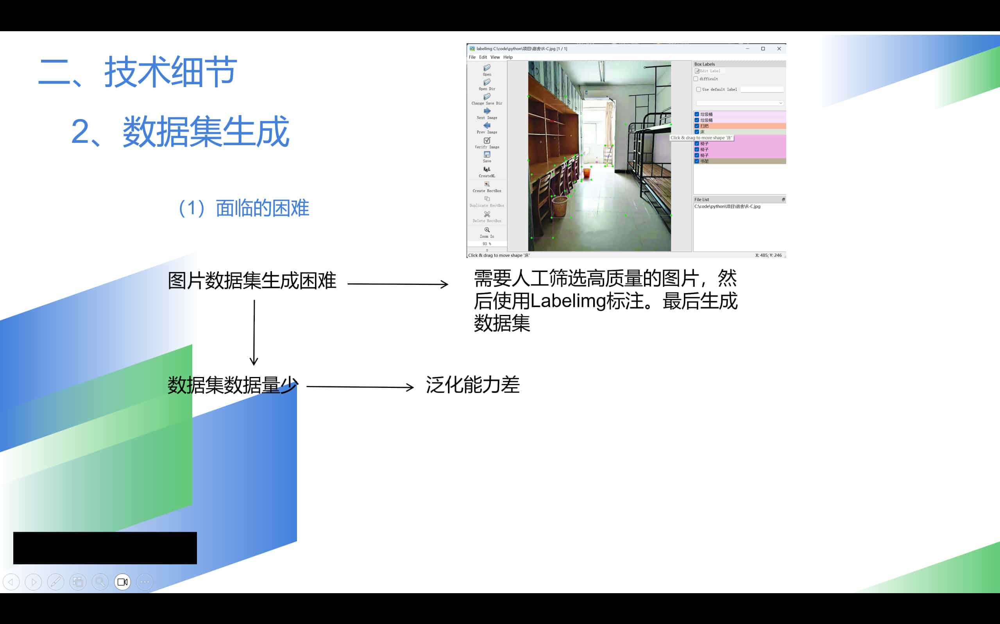

极创工作室
时间经过：2025.09.11-2025.10.11
依旧是高考后的那个暑假
我又在QQ群看见了一条广告（
{kind=link}
当时我觉得，（我去，这个一看就比MoeCTF更正经，）这我要是加入了，不就更厉害了吗？于是我果断点进极创工作室官网（
在官网提交报名表之后，我还发现了福利题。哇，这个福利题真是，和MoeCTF难度不相上下，都是我啥也不会的难度（
开学前我好像只写了一个红眼问题，开学后陆陆续续的也写了几个，还是挺有意思的。虽然和答案相差万里，但写完之后问问AI、查查答案，还是学到了不少的。
时间来到了面试的时候。这应该是我第一次面试，还是超级紧张的，甚至在那里坐立不安。我想，也许就像高考一样，都是正式开始之前紧张，开始后就不紧张了。果然，当我坐到面试官面前，就好多了，还能说一堆自我介绍呢。
过了一两天，我收到通知，哇塞，一面通过了。
于是来到了二面。
二面要求我们在QQ群里自己寻找队友，三人组队在国庆期间完成一个项目。
这个说起来的话，也是我第一次和别人合作做一个技术类的项目。在小组长的分配下，我借助deepseek写了个爬虫程序，并在一晚上的运行下，获得了4500多张照片。还是很有成就感的。可是没人知道，当电脑在下面跑了一个晚上的时候，我早就爬上床睡觉了hhh，当时感觉我就是我电脑的奴隶主（
在这个过程中，我知道了爬虫怎么用，知道了unsplash和pexels等免费图片网站，大概知道了API是干嘛用的。此外通过看群里队友的聊天还知道了agent、多模态是什么意思，以及Dify，Ollama，LlaMa factory等工具。当然还有就是，在极创对我的渲染下，我意识到了AI在当下时代的重要性与火爆程度，其实是非常高的，一直是研究的热门。哦对还有，最后二面答辩的时候，我也才意识到答辩的重要性
下面简单记录一下这个项目吧
首先向我的队友敬礼
（敬礼）
他们是我的同龄人，是陌生人，但同时也是网友，是队友。
我们小组选择的二面题目，是大模型的微调。题目要求自行选择一个感兴趣的方面，基本实现微调
我们小组通过一段时间的头脑风暴，选择了小组长提出的主题
我们想要达成这样的效果：
- 用户输入图片内容
- 大模型进行处理
- 输出特定图片内容
我首先负责与deepseek交流一下午，基本获得了爬虫的python代码，想要在网上搜集项目需要的图片，以便后续模型微调。
在这过程中，我知道了，爬虫应该遵循robots协议。这样才是一个好爬虫。
如果想要短时间内获得大量图片的话，对于unsplash等免费图库，最好的选择是注册账号之后申请一个官方API，否则可能会受到图片爬取的数量限制。
但是短暂尝试之后，我发现在开源免费图库获得的图片并不是很理想，相关度并不高。于是，该用什么关键词来搜索，也成了一门学问。我选择用deepseek来解决（
在用deepseek写了一堆关键词后，我又开始测试。一个晚上之后，我将爬取的4500多张照片做成压缩包发给了队友。

一个队友负责用dify搭建工作流
另一个队友负责使用Llama Factory对模型进行微调（好像是Qwen3-omni）
但我们发现，图片质量还是不行
于是我们去百度和必应手动下载了一百多张照片
（我们在此期间，没有将相关素材进行商用。仅用于学术交流）
接下来，一名队友决定对每一张照片中的特定物品，进行人工框选与标签处理以满足项目需要。但工作量实在太大，到最后也没完成。
 这页PPT是小组长做的。致敬。{kind=link}
最后我做了个PPT，并依据小组长写的项目档案，完成了PPT中项目概述部分。至于PPT中的技术细节部分，则由我们三人接力完成。
答辩的时候，主面试官问了一个触及灵魂的问题：
“你们有没有想过，这个可能不是很容易实现，因为大语言模型就是擅长于处理语言的东西，而不是图片。”
（大概这个意思）
（挠头）
我自己其实觉得这个创意挺好的啊，毕竟有多模态大模型嘛。可能LLM的视觉处理怎么说也不是强项吧。
最后二面结果出来了，极创工作室优中选优，我们自然就没有通过。
不过这段经历对我来说也还是意义非凡的
除了很多新的知识以外，第一次面试、第一次技术性的团队合作、第一次参与答辩，都是很宝贵的人生经验。
二面结束后，对于队友也还是有一点不舍的。毕竟不管怎么说，也算是一起度过了大一的国庆假期呢。
大概就这样吧。